El diseñador de moda orensano Roberto Verino no descarta aceptar una oferta para establecer su centro de producción en Madrid , ante las dificultades que encuentra en materia de incentivos para desarrollar nuevos proyectos.
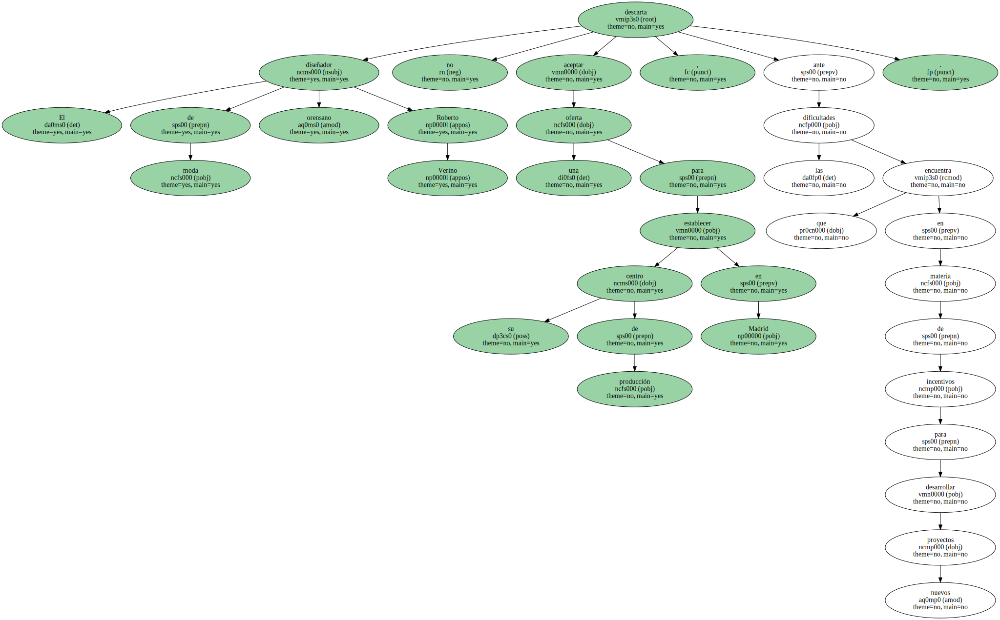En una entrevista concedida a EFE , aseguró que tiene " bastante paciencia e intenta agotar todos los plazos , pero no podemos perder determinadas oportunidades " , matizó.
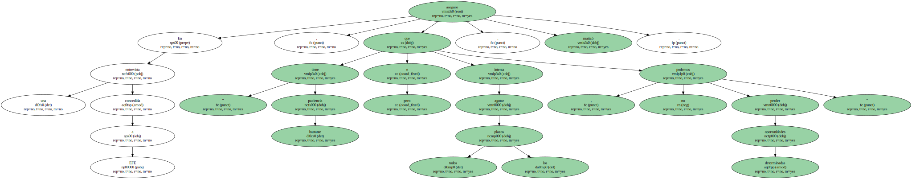Verino declaró que tiene muchos problemas para desarrollar su proyecto de implantación de toda su infraestructura de logística e I+D en el Parque Tecnológico de Galicia , ubicado en el polígono industrial de San Cibrao de Viñas ( Orense ).
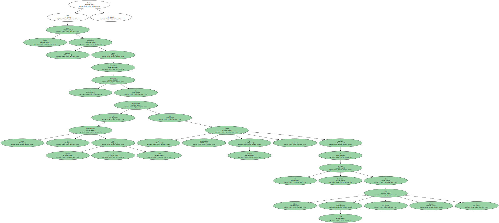El diseñador gallego manifestó que no está encontrando " agilidad de respuesta " por parte de la Administración gallega para el desarrollo de su proyecto que , Según explicó , pasa por " dar respuestas rápidas al mercado y competir mejor ".

El diseñador gallego manifestó que no está encontrando " agilidad de respuesta " por parte de la Administración gallega para el desarrollo de su proyecto que , Según explicó , pasa por " dar respuestas rápidas al mercado y competir mejor ".

El diseñador gallego manifestó que no está encontrando " agilidad de respuesta " por parte de la Administración gallega para el desarrollo de su proyecto que , Según explicó , pasa por " dar respuestas rápidas al mercado y competir mejor ".
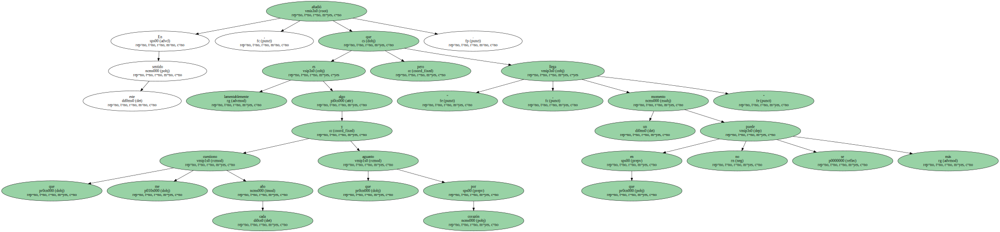El diseñador gallego manifestó que no está encontrando " agilidad de respuesta " por parte de la Administración gallega para el desarrollo de su proyecto que , Según explicó , pasa por " dar respuestas rápidas al mercado y competir mejor ".
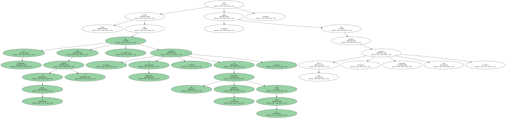El diseñador gallego manifestó que no está encontrando " agilidad de respuesta " por parte de la Administración gallega para el desarrollo de su proyecto que , Según explicó , pasa por " dar respuestas rápidas al mercado y competir mejor ".
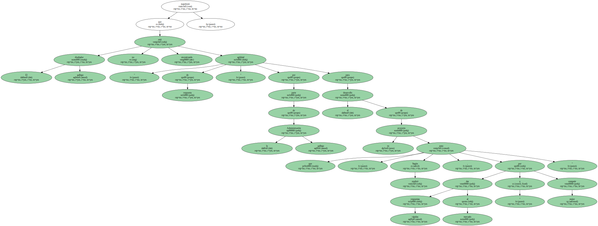El diseñador gallego manifestó que no está encontrando " agilidad de respuesta " por parte de la Administración gallega para el desarrollo de su proyecto que , Según explicó , pasa por " dar respuestas rápidas al mercado y competir mejor ".

El diseñador gallego manifestó que no está encontrando " agilidad de respuesta " por parte de la Administración gallega para el desarrollo de su proyecto que , Según explicó , pasa por " dar respuestas rápidas al mercado y competir mejor ".
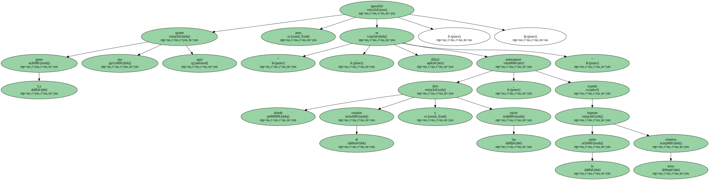El diseñador gallego manifestó que no está encontrando " agilidad de respuesta " por parte de la Administración gallega para el desarrollo de su proyecto que , Según explicó , pasa por " dar respuestas rápidas al mercado y competir mejor ".

" Hacer nuestro trabajo , tan alejados de los grandes mercados , es un alarde de voluntarismo ; así que , después de tanto tiempo intentando hacer muchas cosas , y de hacerlas bien , si no tenemos ventajas competitivas , no queda más remedio que estar donde está el gran consumo " , apuntó.

En este sentido , añadió que " lamentablemente es algo que me cuestiono cada año y que aguanto por corazón , pero llega un momento en que no se puede más ".
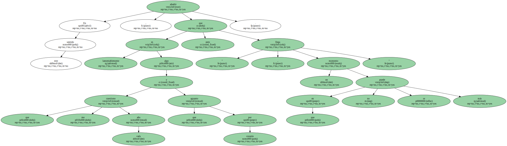Verino recordó que ha demostrado que " en el rural se puede construir y contribuir al desarrollo , con una actividad tan compleja como la moda " , pero agregó que considera muy difícil " ejercer liderazgos aquí ".
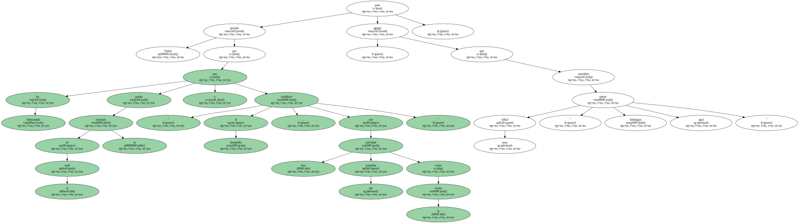Teniendo en cuenta el futuro de su empresa y de sus trabajadores , aseguró que estudia la posibilidad de aceptar la oferta de instalarse en Madrid.
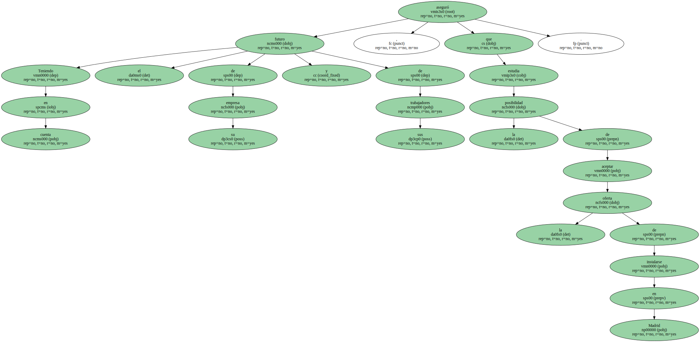El creador comentó que la mejora en la comunicación por carretera con la meseta " no es suficiente " y que en esta Comunidad , " los equipos de trabajo se cansan y se hace difícil competir lejos de los aeropuertos y a más de cuatro horas de las áreas de consumo que son los grandes centros urbanos ".
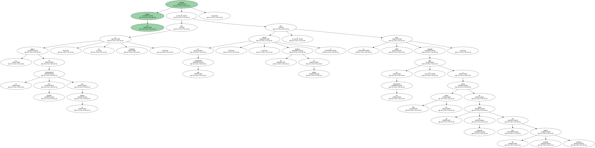" La gente me quiere aquí , pero es difícil permanecer donde dice el corazón y las raíces , cuando la razón impone otros criterios " , apostilló.
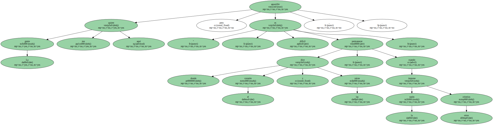Sobre la moda del 2001 , dijo que " será como la que he venido haciendo hasta ahora : funcional , atractiva y sensual " e indicó que " la aportación gallega a la globalización será el gusto y el color que va con nuestra forma de ser , lo que nos diferencia , en un tiempo en el que todos vestiremos de un modo similar " , concluyó.
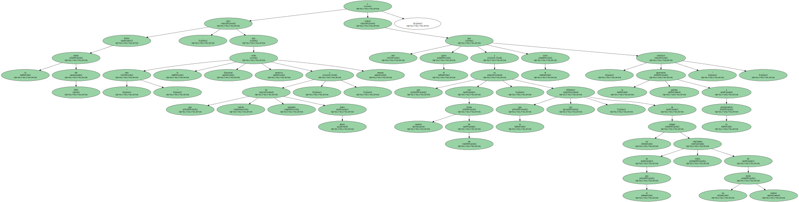